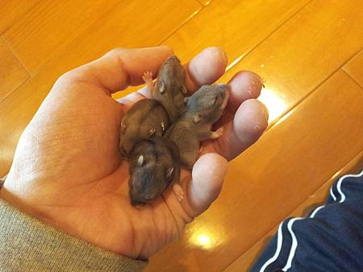
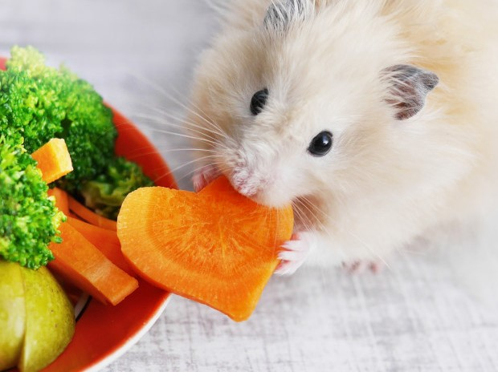
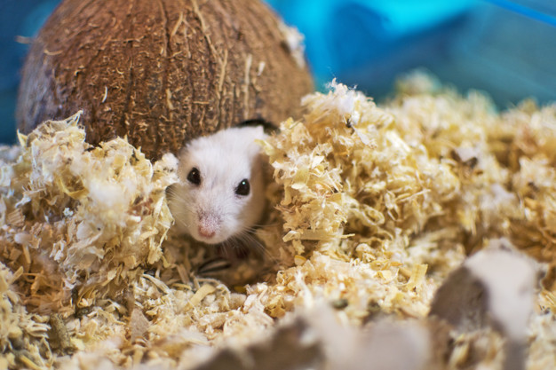
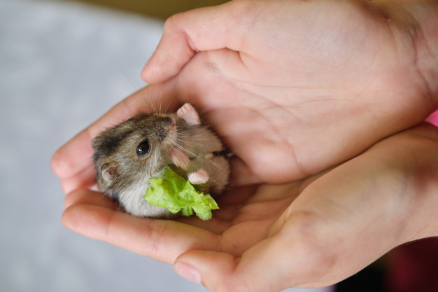

陪伴倉鼠走過一輩子

幼年 - 半歲
剛出生的鼠寶寶,牙齒發育並不完全,與身軀都成長的快速,需要大量的高蛋白及熱量,適合營養粉,羊奶粉等特製糊糊,或搓成丸子讓寶寶自行食用,偶爾給點磨牙棒讓寶寶們磨個開心就很足夠了.

半歲 - 一歲
這時期的鼠寶寶已經是個青壯年了,啃咬都非常有力,也喜歡沒事磨磨牙齒,適合給予適量的磨牙餅,選擇熱量適中的鼠糧,無糖代餐粉製成糊糊或丸子,鼠鼠沒事就會吃東西,要管控好熱量才不會造成鼠鼠過度肥胖唷!

一歲 - 一歲半
一歲的狀態已經是半個老年鼠了,主人會越來越明顯感受到鼠的活力及食慾都會有所改變,為了讓挑食的鼠攝取足夠熱量及營養,我們家有特製的老年鼠專用營養代餐粉,用它來製成糊糊或丸子,沒力氣啃磨牙餅的寶貝都忍不住多舔好幾口呢!

兩歲 - 鼠瑞
兩歲的鼠已經是人瑞等級了,已經不太磨牙或是身體出了一些小毛病, 我們有準備客製化營養糊糊針對這種鼠瑞做飲食管控, 讓他能吃的開心營養也均衡, 盡我們所能讓鼠寶貝能多陪伴在主人身邊.
種類眾多 可依照健康狀況調配